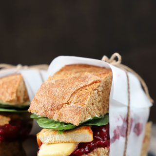

sandwich de pavo
Ingredientes
- 1 pan para sandwich de su gusto por persona, ciabatta queda perfecto
- 1 taza de mayonesa
- 1/2 taza aproximadamente de cebollín picado
- 1 1/2 taza de salsa de cranberries
- Trozos de pavo
- 1 cucharada de mantequilla
- sal
Preparacion
- En un bowl, mezclar la mayonesa con el cebollín.
- En un sartén derretir la mantequilla y saltear los trozos de pavo, sazonar con sal.
- Mientras tanto calentar el pan en el horno por unos minutos. Luego agregar en la base la salsa de cranberries, el queso, los trozos de pavo, espinacas y finalmente en la tapa colocar y esparcir mayonesa.